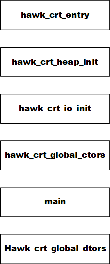
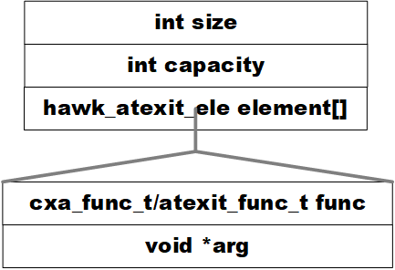
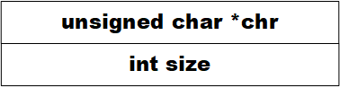

手写C语言运行库二
前言
上一篇博客基本实现了C运行库的功能，这一篇博客接着上一篇博客的基础，实现简化版的C++运行库。
总体上，我们希望该运行库具有如下的性质：
- 支持string类的相关操作
- 支持stream类的相关操作，包括相关的操作符
- 支持全局对象的构造和析构
- 支持new/delete操作
C与C++的相互调用
一方面，我们的C++运行库是基于C拓展的，因此需要在C++中复用C的函数，即会调用C的符号；
另一方面，我们实际上都是从入口函数进行执行，也就是C中定义的入口函数，但是最后会调用到C++运行库，也就是C中会调用C++的符号。
而实际上，经过对应的编译器编译后，C与C++的目标文件都是机器指令，并没有太大区别，因此其相互调用的障碍在于符号名称上——即C与C++在将源文件的符号名称经过编译转换的规则不相同，从而导致生成的目标文件中符号不相同，产生了调用的障碍
幸运的是，C++为了兼容C，提供了方法，从而使C++可以使用C的转换规则，即使用extern "c"关键词。实际上，这里只需要使用一些小技巧，则可以完美解决C与C++之间的相关调用的问题，即在C或C++相关的头文件中，写入如下代码
1 |
|
这样子，最后生成的目标文件中，都同一使用C的编译规则重命名源代码中的符号，则可以在源代码文件中类似C一样进行调用(仅限非对象变量和非对象函数)。特殊说明一下，main是特例，无论是否使用该关键词，都以C的规则进行转换。
而在进行链接的时候，如果使用g++编译器的话，就正常进行链接即可，因为其包含所有C和C++的运行库；如果使用gcc编译器的话，还需要添加-lstdc++库，提供给c++代码部分的运行库
整体流程
根据《程序员的自我修养——链接、装载与库》的分析，C++程序的大体流程基本没有变化，主要是多了全局对象的构造与析构这两个步骤。
基于此，我们的hawkCRT++同样主要添加这两个流程，其全局对象的构造函数为hawk_crt_global_ctors，全局对象的析构函数为hawk_crt_global_dtors，整体流程如下图所示

入口函数拓展
正如前面所介绍的，C++的运行库是基于C的运行库，仅仅多了全局对象的构造和析构这两个步骤，因此其大体框架也仅仅是多了这两个步骤的调用，如下所示
1 | void exit(int status) { |
全局对象的构造
全局对象的构造实际上是一个编译器、链接器和运行库共同实现的功能。下面分别简单介绍一下不同系统下实现的方法：
- Linux
- 对于每一个编译单元，编译器会遍历其中所有的全局对象，并将该全局对象初始化的构造调用整合到一个特殊的函数中。编译器在生成该特殊的函数后，在
.ctors段中放置一个指针，该指针指向前面生成的特殊函数 - 链接器在链接所有的编译单元时，将
.ctors段进行拼接，从而生成了一个函数指针数组，每一个元素都是一个目标文件的全局构造函数 - 对于运行库来说，其分别包含两个含有
.ctors段的目标文件，一个作为.ctors的开头，将其地址定义_CROT_LIST__符号，并且包含整个数组的长度变量(最后由链接器写入具体值)；一个作为.ctors的结尾，将其地址定义为_CTOR_END__
因此，通过上述三个步骤，在入口函数中执行_CTOR_LIST__和_CTOR_END__中指针指向的函数，则可以完成全局对象的初始化
- 对于每一个编译单元，编译器会遍历其中所有的全局对象，并将该全局对象初始化的构造调用整合到一个特殊的函数中。编译器在生成该特殊的函数后，在
- Windows
- 对于每一个编译单元，编译器会遍历其中所有的全局对象，并将该全局对象初始化的构造调用整合到一个特殊的函数中。编译器在生成该特殊的函数后，在
.CRT$XCU段中放置一个指针，该指针指向前面生成的特殊函数 - 链接器在链接所有的编译单元时，由于
.CRT$XC*这些段属性一样，名称相近，会被放到一起，从而组成一个函数指针数组，其每一个元素都是一个目标文件的全局构造函数 - 对于运行库来说，其分别包含两个目标文件，一个将
__xc_a变量分配到了.CRT$XCA段中；另一个将___xc_z变量分配到了.CRT$XCZ段中。由于其余编译单元的全局构造函数皆放置于.CRT$XCU段中，从而夹在__xc_a变量和__xc_z变量之间
因此，通过上述三个步骤，在入口函数中执行__xc_a和__xc_z中指针指向的函数，则可以完成全局对象的初始化
- 对于每一个编译单元，编译器会遍历其中所有的全局对象，并将该全局对象初始化的构造调用整合到一个特殊的函数中。编译器在生成该特殊的函数后，在
可以看到，实际上不同系统下实现的原理都是一样的。因此，C++运行库所需要执行的操作并不是很多。一方面需要通过两个目标文件确认全局构造函数函数指针数组的起始地址和结束地址；另一方面，根据前面相关的地址进行执行即可。
因此，hawkCRT++的全局对象的构造步骤如下：
- 构造全局构造函数函数指针数组的起始地址。
- 在Linux中，将全局构造函数函数指针数组放置在.init_array段中，因此运行库在
.init_array段定义ctors_begin变量作为全局构造函数函数指针数组的长度存储位置，该变量地址加一作为全局构造函数函数指针数组的起始地址 - 在Windows中，运行库在
.CRT$XCA段定义ctors_begin变量，该变量地址加一作为全局构造函数函数指针数组的起始地址
- 在Linux中，将全局构造函数函数指针数组放置在.init_array段中，因此运行库在
- 构造全局构造函数函数指针数组的结束地址。
- 在Linux中，同上的理由，运行库在
.init_array段定义ctors_end变量，该变量地址作为全局构造函数函数指针数组的结束哨兵； - 在Windows中，运行库在
.CRT$XCZ段定义ctors_end变量，该变量地址作为全局构造函数函数指针数组的结束哨兵
- 在Linux中，同上的理由，运行库在
- 在运行库中，遍历
ctors_begin到ctors_end，执行该值对应中的函数指针，即可完成全局对象的构造。这里需要特别注意一下链接的顺序！
1 | // ctors.cpp |
1 | // crtbegin.cpp |
1 | // crtend.cpp |
全局对象的析构
理论上，析构只需要在程序退出前，按照构造函数的严格反序进行执行即可。而早期的运行库的全局对象的析构确实也是这样执行的。
但是由于这要求链接器包装所有的.dtors段，并且是.ctors段的严格反序，对于链接器工作量较大。因此目前常常使用的是通过__cxa_atexit()在全局对象的构造函数中注册进程退出回调函数，从而在exit中完成回调，实现全局对象的析构。
具体到Linux系统和Windows系统下，其相关的全局对象的析构过程如下
- Linux
- 对于每一个编译单元，编译器会遍历其中所有的全局对象，并将该全局对象的析构调用整合到一个特殊的函数中。而编译器在全局对象的构造函数调用中，会调用
__cxa_exit()注册函数，注册该析构调用函数。 - 对于运行库来说，其只需要按照顺序执行
__cxa_exit()函数注册的析构函数调用即可。
实际上，只需要我们使用一些特殊的数据结构，即可实现__cxa_exit()函数的先注册的函数后调用。而由于我们在每个编译单元的全局对象的构造函数中以相同的顺序调用了全局对象的析构函数，这样我们最后执行析构函数的顺序就是构造函数的严格反序
- 对于每一个编译单元，编译器会遍历其中所有的全局对象，并将该全局对象的析构调用整合到一个特殊的函数中。而编译器在全局对象的构造函数调用中，会调用
Windows
- 对于每一个编译单元，编译器会遍历其中所有的全局对象，并将该全局对象的析构调用整合到一个特殊的函数中。而编译器在全局对象的构造函数调用中，会调用
atexit()注册函数，注册该析构调用函数。 - 对于运行库来说，其只需要按照顺序执行
atexit()函数注册的析构函数调用即可。
实际上，只需要我们使用一些特殊的数据结构，即可实现atexit()函数的先注册的函数后调用。而由于我们在每个编译单元的全局对象的构造函数中以相同的顺序调用了全局对象的析构函数，这样我们最后执行析构函数的顺序就是构造函数的严格反序
可以看到，类似于全局对象的构造，全局对象的析构在不同的操作系统下实现的原理仍然都是相似的——即实现一个注册函数，并在全局对象的构造函数中调用即可。而在全局对象的构造函数中调用由编译器完成，因此C++运行库实际上只需要提供注册函数即可；并在执行完用户的
main函数后，按照顺序调用注册的函数即可
因此，hawkCRT++的全局对象的析构步骤如下：- 对于每一个编译单元，编译器会遍历其中所有的全局对象，并将该全局对象的析构调用整合到一个特殊的函数中。而编译器在全局对象的构造函数调用中，会调用
实现注册函数
- 在Linux中，编译器注册全局对象的析构函数时，调用的是
__cxa_atexit，其调用的函数原型为我们只需要将函数及其参数一同记录即可。1
2typedef void (*cxa_func_t)(void*);
int __cxa_atexit(cxa_func_t func, void *arg, void *dso_handle);
这里需要特殊说明一下，在Linux中，为了正常完成全局对象的析构，其还用到了__dso_handle符号，用来执行共享库中相关对象的构造和析构。因为我们并不使用共享库，因此简单做如下定义即可1
2
3extern "C"" {
void *__dso_handle = (void*)0;
} - 在Windows中，编译器注册全局对象的析构函数时，调用的是
atexit，其调用的函数原型为这里每一个全局对象的析构函数皆没有参数，只需要记录相关的函数地址即可。1
2typedef void (*atexit_func_t)(void);
int atexit(atexit_func_t func);
由于前面实现的堆空间管理最小chunk的大小也有1024B，不适合链表结构。因此我们使用动态数组管理注册的全局对象的析构函数；而由于Linux下和Windows下注册的析构函数原型不同，为了统一，将其包装成
hawk_atexit_ele。整体结构图下所示
- 在Linux中，编译器注册全局对象的析构函数时，调用的是
- 调用注册的函数
由于是数组，因此我们只需要从末尾往前进行遍历，然后调用这些包装的元素，即可完成严格反序的全局对象的析构函数的执行
1 | // atexit.c |
new/delete操作
对于new和delete操作，其本质上和C运行库中的malloc和free没有太大的区别，都是用于管理堆上的空间，区别在于new操作后，编译器会接着调用对象的初始化函数进行初始化，然后返回该地址空间；而对于delete操作，编译器首先调用对象的析构函数，然后再进行delete操作，释放该地址空间。
可以看到，实际上对于new和delete完成对象的构造和析构来说，其是由编译器去调用相关对象的相关函数，和本身的new和delete的实现并没有关系，因此其实现起来非常简单，就是简单的实现C++中的相关操作符函数即可
1 | // |
string类(待熟悉C++)
这里为了展示相关的C++特性，选择了string类和stream类进行简单的实现，用来加深对于C++运行库的了解。
stream类的数据结构很简单，其存储总长度和字符串数组即可，如下所示

其支持最基本的C++标准库中的相关操作，其中关于输入输出的操作，在下面的stream类中在具体说明
stream类(待熟悉C++)
最后，给出源代码、构建脚本和测试文件